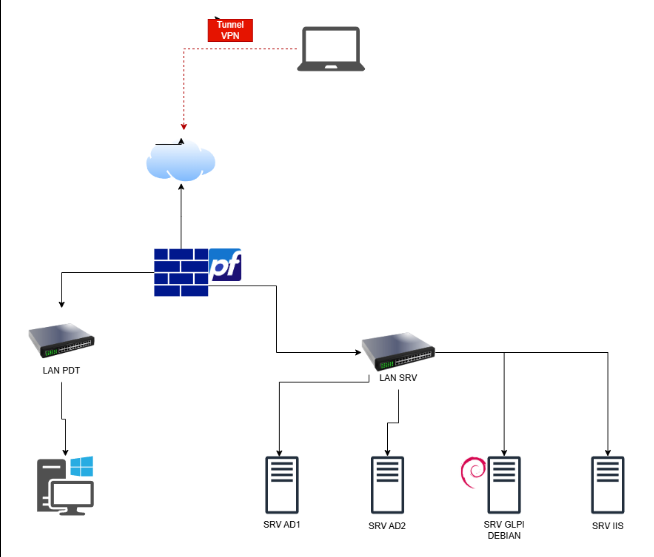

Déploiement de GLPI sur Debian, intégration LDAP/Active Directory et automatisation de l'inventaire par GPO
Contexte — L'entreprise F2I dispose d'un parc informatique composé de postes Windows joints au domaine Active Directory. Face au besoin d'automatiser l'inventaire des équipements et de centraliser la gestion des assets, la direction informatique a souhaité déployer un outil GPAO. En tant que technicien système et réseau, j'ai déployé GLPI sur un serveur Debian, intégré l'annuaire Active Directory via LDAP et automatisé le déploiement de l'agent GLPI par GPO.
- Inventaire automatisé et exhaustif — remonter automatiquement le matériel et les logiciels sur le parc.
- Service Desk (Helpdesk) — structurer le support via un système de tickets conforme ITIL.
- Authentification unifiée — simplifier la connexion via l'annuaire Active Directory existant (LDAP).
- Isolation & sécurité — protéger le serveur GLPI en l'isolant du reste du réseau via pfSense.
L'infrastructure est hébergée sur l'hyperviseur Proxmox VE de l'école (accessible en local : 10.100.3.252:8006). Le pare-feu pfSense sépare deux zones : LAN SRV (serveurs) et LAN PDT (postes de travail).
| Équipement | Interface | Adresse IP | Masque | Passerelle |
|---|---|---|---|---|
| Firewall (pfSense) | eth0 (WAN) | 192.168.15.105 | 255.255.255.0 | 192.168.15.254 |
| vmbr10096 (LAN SRV) | 192.168.2.30 | 255.255.255.224 | FAI | |
| vmbr20096 (LAN PDT) | 192.168.1.254 | 255.255.255.0 | FAI | |
| DC1 (AD Principal) | vmbr10096 | 192.168.2.2 | 255.255.255.224 | 192.168.2.30 |
| DC2 (AD Backup) | vmbr10096 | 192.168.2.4 | 255.255.255.224 | 192.168.2.30 |
| SRV IIS | vmbr10096 | 192.168.2.5 | 255.255.255.224 | 192.168.2.30 |
| SRV Debian GLPI | vmbr10096 | 192.168.2.3 | 255.255.255.224 | 192.168.2.30 |
| Poste de Travail (PDT) | vmbr20096 | DHCP (192.168.1.0/24) | 255.255.255.0 | 192.168.1.254 |
| Poste de Test (WAN) | — | 192.168.15.240 | 255.255.255.0 | 192.168.15.254 |

Architecture réseau — pfSense, LAN SRV, LAN PDT, Tunnel VPN et serveurs
Le projet a été décomposé en 5 axes techniques, réalisés sur Proxmox dans un environnement isolé par pfSense :
Déploiement d'une VM Debian 12 sur Proxmox, isolée dans le LAN SRV par pfSense.
- Installation et sécurisation SSH + pare-feu UFW
- Pile LAMP : Apache, MariaDB, PHP
- Création de la BDD dédiée GLPI
Installation et configuration de l'application GLPI 10 sur le serveur Debian.
- Configuration du VirtualHost Apache
- Droits fichiers et extensions PHP
- Finalisation via l'assistant web GLPI

Synchronisation GLPI avec l'annuaire Active Directory (DC-01) via LDAP.
- Configuration du connecteur LDAP dans GLPI
- Authentification unifiée avec les comptes AD
- Import automatique des utilisateurs du domaine
Déploiement silencieux de l'agent GLPI sur les postes clients via GPO Active Directory.
- Distribution du paquet via le serveur de fichiers
- Création de la GPO de déploiement silencieux
- Validation de la remontée automatique d'inventaire

Mise en production du système de ticketing et gestion des droits d'accès.
- Création des profils (Tech, User, Admin)
- Configuration des notifications SMTP
- Catégorisation et priorisation des tickets